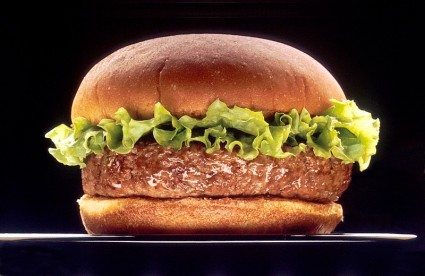

Hamburger

Make burgers your way and have them come out flawless every time with what I consider to be the Best Hamburger Patty Recipe, in my humble opinion.
It is a classic all-American recipe for mouthwatering burgers that can be cooked on the grill, on the stovetop, as thick 1/3 pound patties, or as ultra-thin griddle patties.
Get ready, because you are about to make the burger of your dreams, people!
Ingredients
- 2 pounds ground beef
- 1 egg, beaten
- ¾ cup dry bread crumbs
- 3 tablespoons evaporated milk
- 2 tablespoons Worcestershire sauce
- ⅛ teaspoon cayenne pepper
- 2 cloves garlic, minced
Steps
- Gather all ingredients.
- Preheat a grill for high heat.
- Mix the ground beef, egg, bread crumbs, evaporated milk, Worcestershire sauce, cayenne pepper, and garlic in a large bowl using your hands.
- Form the mixture into 8 hamburger patties.
- Lightly oil the grill grate. Grill patties until browned and no longer pink, about 5 minutes per side.
- Serve hot and enjoy!